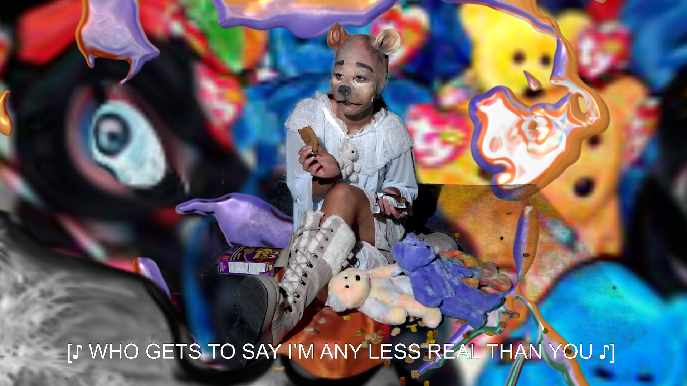
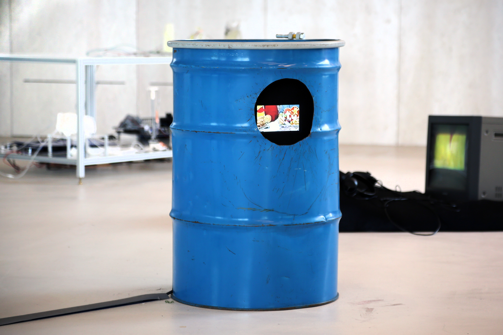

:"'._..---.._.'";
`. .'
.' ^ ^ `.
: a a : __....._
: _.-0-._ :---'""'"-....--'" '.
: .' : `. : `,`.
`.: '--'--' :.' ; ;
: `._`-'_.' ;.'
`. '"' ;
`. ' ;
`. ` : ` ;
.`. ; ; : ;
.' `-.' ; : ;`.
__.' .' .' : ; `.
.' __.' .'`--..__ _._.' ; ;
`......' .' `'""'`.' ;......-'
jgs `.......-' `........'

Comparing the NFT market to the similarly trended Beanie Babies trading boom of the 90s, Cruz dissects the value of digital assets and images, within a highly saturated digital culture. Housed in a bait barrel used to lure bears for hunting, the video appropriates pop culture bears as drawn from plush toys, TV characters, children’s books, amusement park rides, and candy molds, rendering the figures endlessly reproduced and commodified.
Marissa Sean Cruz is a digital multimedia and video performance artist from Kjipuktuk (so-called Halifax). Cruz’s topics of interest are related to labour, power and surveillance as seen through digital platforms and pop culture. Their experimental videos comprise found footage, 3D modelling, sound design and costumed performances to look at value systems with critical sensibility. These satirical works aim to capture a fast-paced contemporary present and envision possible, liberatory futures.